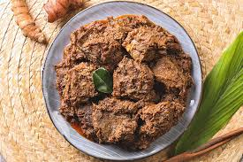

3 Makanan Indonesia Yang Dikenal Dunia
Indonesia punya kekayaan kuliner yang beragam dari Sabang sampai Merauke. Setiap masakan memiliki filosofi dan cita rasa khas yang berasal racikan tradisi turun temurun. Bukan hanya orang Indonesia yang menikmatinya, dunia pun satu lidah soal rasa. Terbukti dari banyak nya lembaga survey dan salah satunya CNN ternyata beberapa masakan Indonesia kembali masuk ke dalam daftar makanan terenak di dunia.
Setiap tahun banyak sekali lembaga atau media yang mengadakan survei serupa. Salah satunya CNN pernah merilis daftar 50 jenis makanan terenak sedunia lewat 35.000 voting di media sosial Facebook. Dan 3 masakan Indonesia berhasil masuk daftar makanan terenak dunia tersebut.
Penasaran, apa saja tiga makanan Indonesia yang seringkali berhasil masuk ke dalam daftar makanan terenak di dunia?
Rendang

Masakan khas Sumatera Barat ini sudah langganan menjadi makanan nomer satu terenak di dunia. Terbuat dari bahan utama daging sapi yang dimasak dengan beragam rempah seperti cabai, serai, jahe, lengkuas, kunyit, bawang, serta santan hingga meresap.
Uniknya untuk menghasilkan rasa dan tekstur sempurna, rendang dimasak hingga empat jam lebih. Rendang matang pun dapat tahan hingga berminggu-minggu. Sekarang sudah semakin banyak versi rendang, seperti rendang telur, rendang ayam, rendang suwir, rendang ikan, bahkan burger rendang.
Bunda ingin memasak rendang tetapi anak-anak tidak terlalu suka dengan tekstur daging sapi yang lebih keras, kenapa tidak mencoba membuat rendang ayam? Tekstur ayam yang lebih lembut dan juicy pasti disukai anak-anak. Proses memasaknya pun tidak akan selama daging sapi.
Agar lebih praktis, Bunda bisa memakai So Good Ayam Potong Paha & Dada atau So Good Ayam Utuh Potong 10. Terbuat dari daging ayam pilihan yang diproses dengan teknologi modern untuk menjaga kesegaran dan gizi dari ayam.
Nasi Goreng

Siapa suka menyantap nasi goreng hangat saat sarapan? Kelezatan nasi goreng memang bikin nagih. Bahkan tokoh dunia seperti Barack Obama menyebut nasi goreng sebagai menu favoritnya. Nasi goreng menjadi populer karena mudah dibuat dan banyak kreasinya.
Nasi goreng semakin lezat dan bergizi jika ditambah beberapa bahan makanan, seperti telur, bakso, sosis, daging ayam, seafood atau sayuran. Sebagai pelengkap nasi goreng berupa suwiran ayam, Bunda bisa memakai So Good Ayam Potong Paha & Dada yang bebas pengawet sehingga aman untuk si Kecil. Atau mau pakai bakso dan sosis? So Good pun memiliki banyak varian bakso dan sosis, seperti bakso ikan, bakso ayam, sosis ayam, sosis ayam madu, dan sebagainya.
Sate
/https://kurio-img.kurioapps.com/20/11/05/92c9acf1-3df4-4182-a6cb-b60697c8b1e3.png)
Pada survei makanan terenak di dunia versi CNN, sate berada pada peringkat ke-14, mengalahkan gelato dari Italia. Patut bangga, dong.
Sajian daging berbumbu yang dipotong kecil-kecil, ditusuk dengan lidi atau bambu, lalu dibakar ini memang lezat. Sejumlah restoran di luar negeri menjadikan sate sebagai menu andalan, salah satunya restoran Satay Junction di New York, AS.